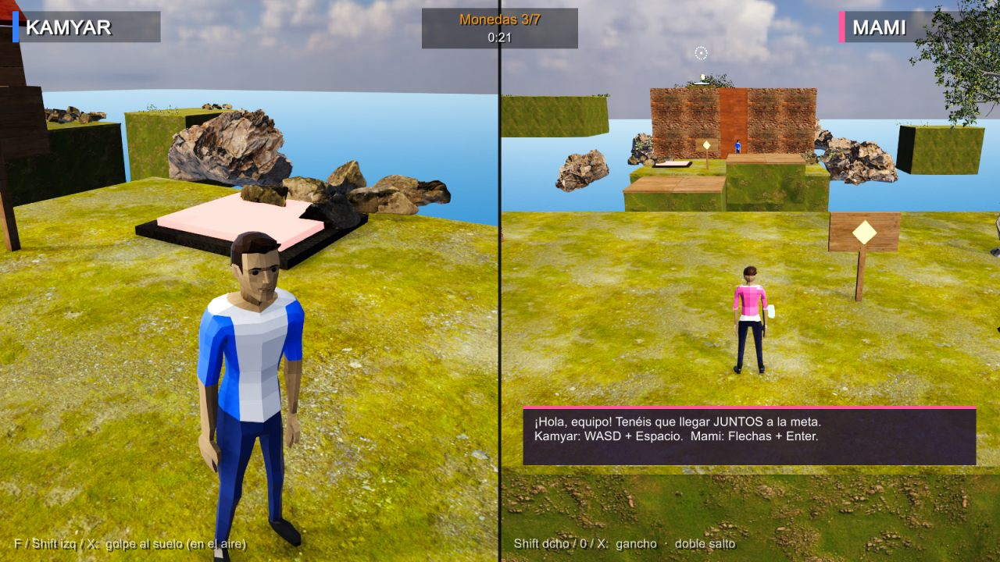
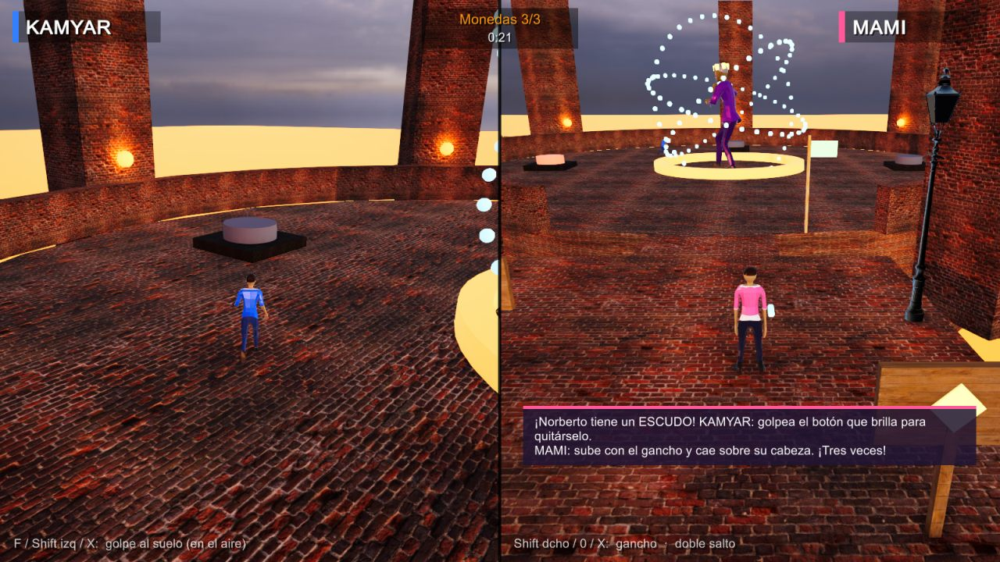

Kamyar y Mami solo pueden ganar juntos. ¡Llegad a la meta los dos!

Gratis · 121 MB · Windows 10/11. Descomprime el zip y abre It Needs Two KMM.exe. Si Windows dice "aplicación desconocida", pulsa Más información → Ejecutar de todas formas.
Pantalla dividida en el mismo PC, o cada uno en su casa por internet.
Golpe al suelo: rompe cajas, pulsa botones y lanza a Mami.
Doble salto y gancho para llegar a sitios altos.
Jardín, Fábrica y el Castillo de Norberto con jefe final.

Kamyar: W A S D moverse · Espacio saltar · F golpe · Q/E o el ratón girar la cámara
Mami: Flechas moverse · Enter saltar · Shift dcho gancho · ,/. girar la cámara
La cámara también gira sola hacia donde caminas. Funciona con mandos.